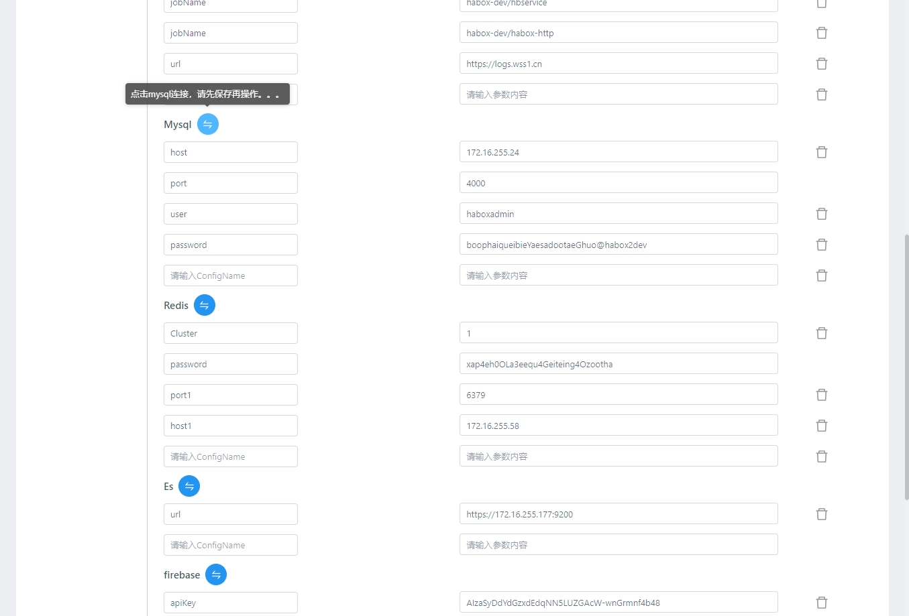
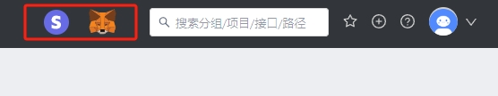

项目操作
基本设置
- tag 信息：可自定义tag名称和tag描述，tag信息可用在接口tag标识中;
- mock 严格模式：开启后 mock 请求会对 query，body form 的必须字段和 json schema 进行校验;
- 开启json5：开启后允许接口请求body 和返回值中写 json 字段。yapi建议用户关闭 json5， 因为json-schema 格式可以进行接口格式校验。

全局配置
- 此处可配置一些全局配置，目前仅支持openapi相关配置
新建项目
点击右上角的 + 新建项目，进入新建项目页面。

在新建项目页，填写项目信息：
- 项目名称不允许重复，包括其他分组
- 基本路径为接口统一添加了前缀
- 新建项目页只列出了部分配置，其他详细配置(环境配置、项目图标等)需要进入项目页的“设置”面板进行配置。

修改项目
在项目页点击上方的 设置 Tab 进入项目设置面板，这个面板涵盖了项目的所有配置。

这里比新建项目页面新增的功能如下：
修改项目图标
点击项目图标，可以修改图标及背景色：
项目迁移
YApi 中支持项目迁移到不同的分组中。

迁移权限： 只有管理员和该项目的 owner 有权限对位置进行修改。项目 owner 主要有创建该项目的人、项目中的组长、创建分组的人、分组中的组长。
Tips: owner 权限判断的优先级是 项目权限 > 分组权限
项目拷贝
该功能在 v1.3.12 版本上线，项目克隆功能可复制项目全部接口到一个新项目，如下图所示,点击红色框里面的 icon 使用。
YApi 支持项目复制功能，但是无法复制项目中的测试集合 list。
操作： 点击下图左上角的复制按钮，在弹窗中写入复制项目名称点击确定就可以完成项目复制


Tips: 如果你在该分组下有新建项目的权限，那你也同时拥有复制项目的权限
删除项目
点击下方的删除按钮，输入项目名称进行删除。
删除项目是高风险操作，因此 YApi 对这个操作进行了特别的约束。
配置环境
环境配置 一项可以添加该项目下接口的实际环境，供 接口测试 使用，这里增加了全局 header，可以在项目中设置全局 header 值。在接口运行页面的选择环境 select 中也增加环境配置弹层。

v1.3.21 新增全局变量，用户可以在环境列表中定义全局变量的名称和值, 接口运行或者测试集合里面可以通过 {{ global.err }} 来访问当前环境变量下定义的全局变量

新增Mysql、Redis、Es、firebase、General服务日志环境配置，项目使用时可根据不同环境的配置进行测试。mysql、redis、es在保存信息后续进行连接后才可正常使用。firebase使用时需先进行点击初始化才可正常使用，若在网页中出现firebase无法调用，需检查配置且重新初始化。General服务日志在保存信息后续进行连接后才可正常使用。
快捷操作 Stripe支付、Metamask连接
若需调用第三方支付，可在头部点击图标。stripe支付为嵌入式页面，需公钥和认证token。metamask连接需安装插件，点击连接后调用请求配置函数ethsign进行eth登录
请求配置
pre-script, 通过自定义 js 脚本方式改变请求的参数和返回的 response 数据
全局公共方法
可在此处编辑一些公共的变量和函数以供后续脚本使用
function generateSignature(){
const PRIVASEA_SECRET = 'V3X3nPmSfmFuZs1ByFn2Z7YcYtGyi0VfRZpmmraFPN5LRHPXeynghpEflBwsb0jv';
let bodyData = JSON.stringify(context.requestBody);
let signpath = context.pathname.replace('/deepsea-back','');
let signatureStr = context.method+signpath+"?"+bodyData;
console.log('signpath',signpath);
let signature = CryptoJS.HmacSHA256(signatureStr, PRIVASEA_SECRET).toString(CryptoJS.enc.Hex);
console.log(signature);
return signature;
}
var stakingAddress = '0xFA6E1d164ed6C1E7df35C6FEEAf620eE47D66B60';
请求参数示例
以 jquery ajax 为例，假设当前的请求参数是
{
url: '/api/user?id=1',
method: 'POST',
headers: {
xxx: 'xxx'
},
data: {
type: 1
}
}
那么公共变量 context 包含以下属性：
context = {
pathname: '/api/user',
query: {
id: 1
},
requestHeader: {
xxx: 'xxx'
},
method: 'POST',
requestBody: {
type:1
}
}
假设我们需要在一组接口的 url 上增加一个公共的 token 参数，可以写如下自定义脚本：
context.query.token = context.utils.md5(context.pathname + 'salt');
返回数据示例
在上面的示例请求完成后，假设返回 responseData={a:1},公共变量 context 包含以下属性：
context = {
pathname: '/api/user',
query: {
id: 1
},
requestHeader: {
xxx: 'xxx'
},
method: 'POST',
requestBody: {
type:1
},
responseData: {
a:1
},
responseHeader: {
content-type: 'application/json'
...
}
}
假设我们需要修改响应数据 responseData a 的值为 2，可以填写如下自定义脚本：
context.responseData.a = 2;
（v1.3.16+新增）context.href 和 context.hostname
（v1.3.17+新增）context.caseId 测试用例的唯一 key 值
（+新增）context.taskId 当前执行者id
（+新增）context.ws 当前websock连接地址
（+新增）context.wsmsg 传入域名，和查询条件可查询连接下的历史消息记录 let msgsall = context.wsmsg(uri,"all")
storage
storage.setItem 兼容浏览器和服务端，并且是持久化数据存储，不会丢失，用法类似于 localStorage。 storage 一共两个 api，分别是 setItem 和 getItem
storage.setItem('xxx', 'token-----xxxxx')
context.query.token = storage.getItem('xxx')
工具函数
context.utils = {
_ //underscore 函数,详细 API 查看官网 http://underscorejs.org/
CryptoJS // crypto-js（v1.3.21+新增）, 详细用法看 https://github.com/brix/crypto-js
base64 //转换字符串为 base64 编码
md5 //转换字符串为 md5 编码
sha1 //转换字符串为 sha1 编码
sha224 //转换字符串为 sha224 编码
sha256 //转换字符串为 sha256 编码
sha384 //转换字符串为 sha384 编码
sha512 //转换字符串为 sha512 编码
unbase64 //转换 base64 编码为字符串
axios // axios 库，可用于 api 请求，官网 https://github.com/axios/axios
firebasesgin //在环境中已初始化firebase后就能进行调用，注意是异步的 需要进行异步等待 context.utils.firebasesgin();
oauth2SignIn //使用谷歌oauth2登录，参数为client_id，注意配置：'redirect_uri':window.location.origin+'/Oauth2','state': 'yapi'
revokeAccess //谷歌退出，参数为自定义token
phone //生成随机手机号
idcard //生成随机身份证
bancard //生成随机银行卡号，可传首号段
timestamp //生成时间戳，默认当前时间戳，可传某段时间 2024-09-03 16:53:13
timestampms //生成毫秒级时间戳
ethsign //进行eth登录，注意是异步等待的，必须先连接钱包
encodeDES //DES加密 传入密钥和向量
encodeAES //AES加密
imgBase64 //生成随机图片base64字符串
tobedivisibleby //整除
bs58Encode: utils.bs58Encode,
}
- firebasesgin、oauth2SignIn、revokeAccess、ethsign这些函数只能在前端测试时使用，服务端自动化测试不可调用，因为是基于浏览器的
CryptoJS 具体用法
var data = [{ id: 1 }, { id: 2 }];
// Encrypt
var ciphertext = context.utils.CryptoJS.AES.encrypt(JSON.stringify(data), 'secret key 123');
// Decrypt
var bytes = context.utils.CryptoJS.AES.decrypt(ciphertext.toString(), 'secret key 123');
var decryptedData = JSON.parse(bytes.toString(CryptoJS.enc.Utf8));
console.log('decryptedData', decryptedData);
异步处理（v1.3.13+支持）
处理请求参数，或返回数据，可能还会涉及到异步处理，比如 ajax 请求，YApi 在 v1.3.13 版本支持了异步处理。
context.promise = new Promise(function(resolve) {
var api = context.utils.axios.get('http://yapi.local.qunar.com:3000/api/user/status');
api.then(function(result) {
//...
console.log(result.data);
resolve();
});
});
promise 还可以来设置接口延迟
context.promise = new Promise(function(resolve) {
setTimeout(function() {
console.log('delay 1000ms');
resolve('ok');
}, 1000);
});
使用方法就是在 context 里面添加 promise 参数,并且返回一个 Promise，不熟悉 Promise 的童鞋可以查下相关用法，ajax 请求可以使用 context.utils.axios 库。
处理完成后，不要忘记
resolve()，不然会一直处于挂起状态
timeoutLimit 可以在请求前设置timeoutLimit的ms时间，用于判断接口超时处理，优先级用例>集合>工程。若超时那么会报错状态码408
var timeoutLimit = '6000';
token
每个项目都有唯一的标识 token，用户可以使用这个 token 值来请求 openapi。
全局mock
v1.3.21 新增全局 mock 设置，方便用户在项目层面上全局设置公共的mock数据，具体 mock 脚本详细使用方法详见 自定义 Mock 脚本
可以针对项目自定义 Mock 占位符，具体使用方法如下：
Random.extend({
constellation: function(date) {
var constellations = ['白羊座', '金牛座', '双子座', '巨蟹座', '狮子座', '处女座', '天秤座', '天蝎座', '射手座', '摩羯座', '水瓶座', '双鱼座']
return this.pick(constellations)
}
})
在接口编辑中使用
{
"data": "@CONSTELLATION" // => "水瓶座"
}
Mock 优先级说明
请求 Mock 数据时，规则匹配优先级：Mock 期望 > 自定义 Mock 脚本 > 项目全局 mock 脚本 > 普通 Mock。
如果前面匹配到 Mock 数据，后面 Mock 则不返回。
飞书机器人通知
添加飞书机器人webhook地址，选择需要通知的类型，并打开。在此项目中，相应类型操作后进行飞书机器人推送